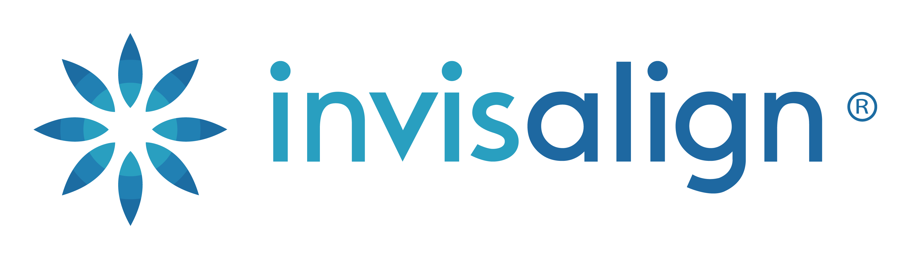
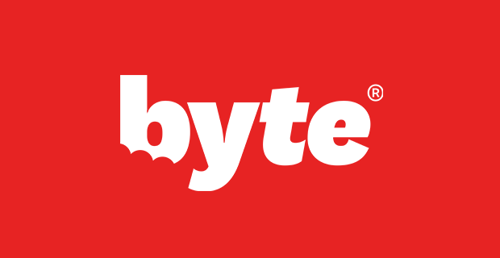

Analyse détaillée de chaque marque
 SmileDirectClub MEILLEUR PRIX
SmileDirectClub MEILLEUR PRIX
SmileDirectClub est l'un des pionniers des aligneurs invisibles à domicile. Fondée en 2014, l'entreprise a déjà traité plus d'un million de patients. Son principal avantage est son prix abordable et la possibilité de réaliser l'évaluation initiale soit à domicile avec un kit d'empreinte, soit dans l'une de leurs nombreuses boutiques avec un scan 3D.
Avantages :
- Prix compétitif avec options de paiement flexibles
- Réseau de boutiques physiques pour les scans 3D
- Suivi à distance pratique via l'application mobile
- Livraison de tous les aligneurs en une seule fois
Inconvénients :
- Service client parfois critiqué
- Supervision orthodontique moins intensive que certains concurrents
- Ne convient pas aux cas complexes
SmileDirectClub est idéal pour les personnes recherchant une solution abordable pour des corrections mineures à modérées, avec un processus pratique et une durée de traitement relativement courte.
En savoir plus sur SmileDirectClub
 Invisalign
Invisalign est la référence en matière d'aligneurs invisibles, avec plus de 20 ans d'expérience et plus de 8 millions de patients traités dans le monde. Contrairement aux autres options de cette liste, Invisalign nécessite des visites régulières chez un orthodontiste ou un dentiste, ce qui permet un suivi personnalisé et la possibilité de traiter des cas plus complexes.
Avantages :
- Supervision directe par un orthodontiste ou dentiste
- Peut traiter des cas plus complexes
- Technologie avancée avec attachements pour des mouvements dentaires précis
- Longue expérience et résultats prouvés
Inconvénients :
- Prix significativement plus élevé
- Nécessite des visites régulières en cabinet
- Durée de traitement généralement plus longue
Invisalign est recommandé pour les personnes ayant des problèmes d'alignement plus complexes ou qui préfèrent la sécurité d'un suivi en personne par un professionnel de l'orthodontie.
En savoir plus sur Invisalign
 Byte
Byte se distingue par sa technologie HyperByte, un dispositif à vibrations haute fréquence qui, selon la marque, peut réduire la durée du traitement et l'inconfort. Avec une durée moyenne de traitement de seulement 3-4 mois, Byte propose l'une des solutions les plus rapides du marché.
Avantages :
- Traitement plus court grâce à la technologie HyperByte
- Garantie à vie sur les résultats
- Excellent service client
- Option de traitement nocturne disponible
Inconvénients :
- Pas de boutiques physiques pour les scans
- Entreprise relativement nouvelle avec moins d'historique
- L'efficacité de la technologie HyperByte n'est pas universellement prouvée
Byte est particulièrement adapté aux personnes qui souhaitent des résultats rapides et qui apprécient la garantie à vie offerte par la marque.
En savoir plus sur Byte
Candid
Candid a récemment modifié son approche pour adopter un modèle hybride qui combine le traitement à domicile avec la supervision d'un orthodontiste local. Cette approche "CandidPro" vise à offrir le meilleur des deux mondes : la commodité du traitement à domicile et l'expertise d'un professionnel.
Avantages :
- Supervision par un orthodontiste local
- Suivi régulier via l'application avec technologie AI
- Aligneurs de haute qualité
- Approche plus médicale que commerciale
Inconvénients :
- Prix plus élevé que d'autres options à domicile
- Disponibilité limitée selon la localisation
- Processus potentiellement plus long en raison de la coordination avec les orthodontistes
Candid est idéal pour ceux qui souhaitent un niveau de supervision professionnelle plus élevé que les autres options à domicile, tout en évitant les visites fréquentes en cabinet nécessaires avec Invisalign.
En savoir plus sur Candid